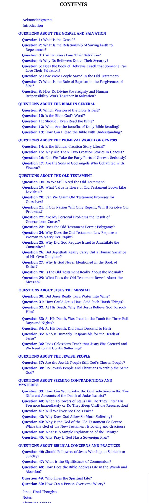
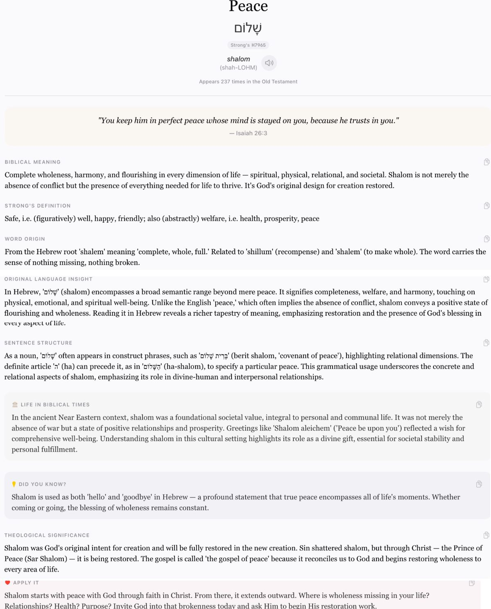

Blessed Sabbath to you all! For some reason the word "Sabbath" always gets my mind wandering toward the full meaning of Shalom — one of my favorite words in the Old Testament. Chesed is another.
I was browsing Logos's monthly sale and picked up a short book of fifty hard questions for around five dollars. Here's the table of contents. If any of these questions grab you, let me know and I'll send along the book's answer.

Bonus — while I was down the rabbit hole, I pulled together a word-study card on Shalom itself, since it's the word that started this whole train of thought.
